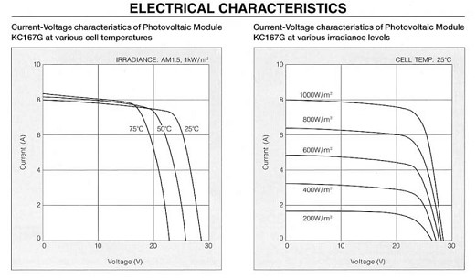
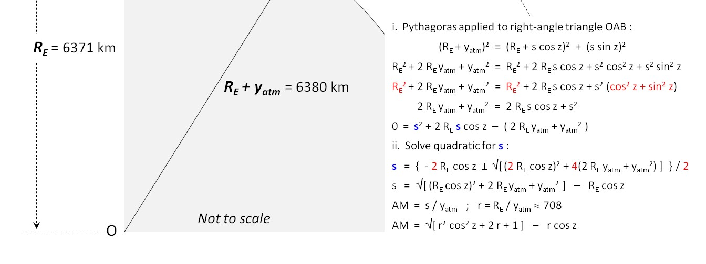
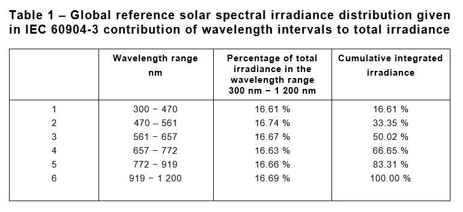
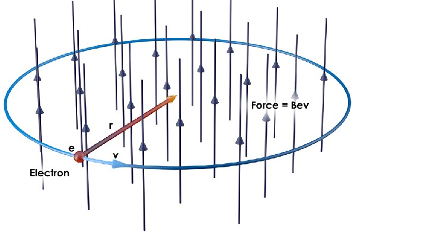
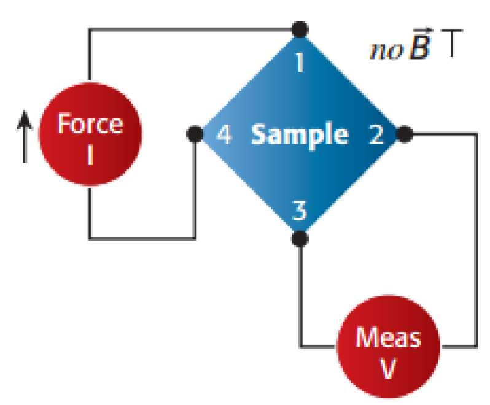
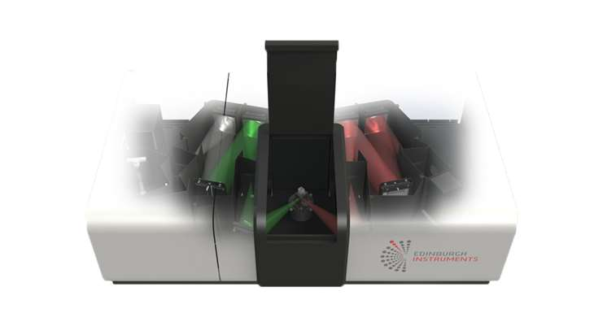
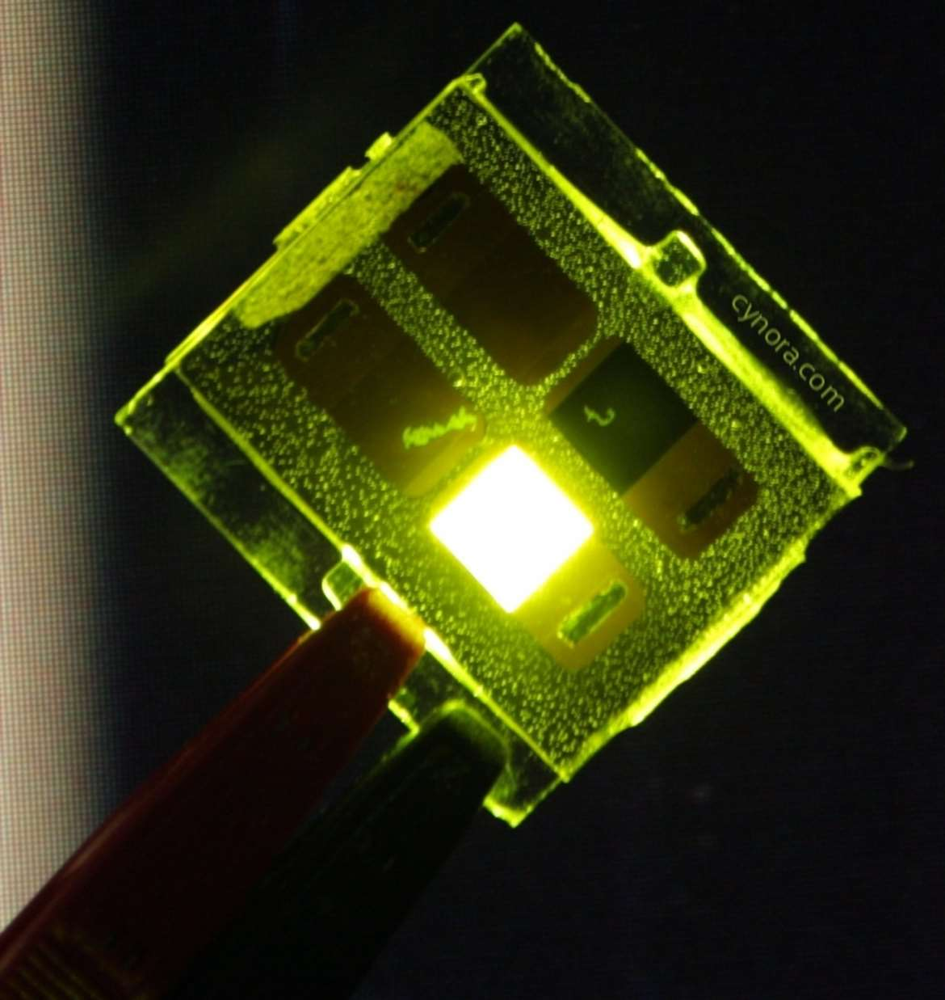
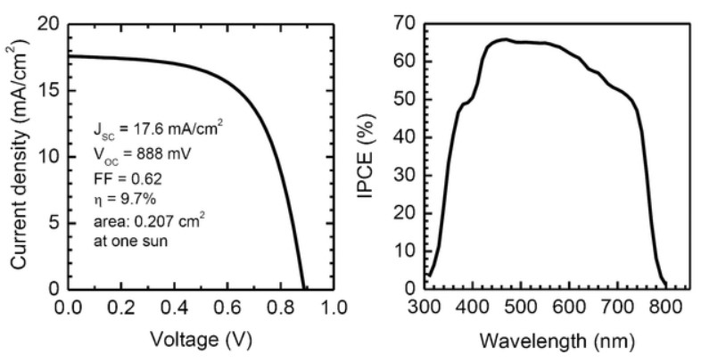

課程概覽 & 期末考點整理
本教學網頁是針對太陽能電池原理、光電量測技術及實作實驗所設計的複習資源。版面採用 Obsidian 曜石金護眼美學，將繁雜的講義公式與實驗原理進行系統化整理，供MJ快速掌握考試重點。
- 太陽光模擬器分級：IEC 60904-9:2020 的最新 AAA (A+A+A) 定義。
- I-V 參數與 PCE 計算：開路電壓 $V_{OC}$、短路電流密度 $J_{SC}$、填充因子 $FF$ 及光電轉換效率 $\eta$ 的聯立公式與等效電路。
- EQE / IPCE：外量子效率公式中 $1240$ 係數的物理來源，波長對應關係。
- 霍爾效應：以 van der Pauw 結構量測載子濃度與遷移率，以及霍爾電場 $E_H$ 的洛倫茲力平衡。
- FS5 螢光光譜儀：PL 與 PLE 的物理意義與分光架構。
1. 太陽能電池 I-V 特性與 PCE 計算
光伏元件關鍵電氣參數
太陽能電池本質上是一個照光產生光生電流的大面積 PN 接面。在電氣特性量測中，我們會使用 SourceMeter 掃描偏壓，得到電流密度-電壓 (J-V) 曲線，從中評估以下關鍵指標：
| 參數名稱 | 符號 | 定義與物理意義 | 理想計算公式 |
|---|---|---|---|
| 開路電壓 | $V_{OC}$ | 輸出電流為 0 時的兩端電壓。代表材料能隙對光生載子能階的分離能力。 | $V_{OC} = \frac{n k T}{q} \ln\left(\frac{I_{ph}}{I_0} + 1\right)$ |
| 短路電流 | $I_{SC}$ ($J_{SC}$) | 輸出電壓為 0 時的電流（密度）。代表照光下材料吸收光子產生並收集到的載子數量。 | $I_{SC} \approx I_{ph}$ |
| 填充因子 | $FF$ | 最大輸出功率與 $V_{OC} \times I_{SC}$ 乘積之比值。代表 I-V 曲線的飽滿程度。 | $FF = \frac{V_{max} J_{max}}{V_{OC} J_{SC}} = \frac{P_{max}}{V_{OC} J_{SC}}$ |
| 光電轉換效率 | $PCE$ ($\eta$) | 電池最大輸出功率與入射太陽光功率的比值。 | $\eta = \frac{P_{max}}{P_{in}} = \frac{V_{OC} J_{SC} FF}{P_{in}}$ |
等效電路與電阻影響
實際的太陽能電池並非完美，通常使用包含單二極體、串聯電阻 $R_s$ 與並聯電阻 $R_{sh}$ 的等效電路來描述：

主要來源於半導體體電阻、表面接觸電阻及金屬電極電阻。$R_s$ 越小越好。當 $R_s$ 增加時，$I-V$ 曲線右側斜率下降，主要損耗 $FF$ 與短路電流，進而降低轉換效率。
主要來源於 PN 接面邊緣漏電、微小缺陷造成的漏電通道。$R_{sh}$ 越大越好。當 $R_{sh}$ 下降時，大量光生電流發生旁路短路，$I-V$ 曲線左側斜率增加，顯著損耗 $V_{OC}$ 與 $FF$。
2. 太陽模擬器與 IEC 60904-9:2020 AAA 標準
大氣質量 (Air Mass, AM) 定義
太陽輻射在穿過大氣層時，會受到大氣氣體、水氣及懸浮微粒的吸收與散射，導致光強衰減。Air Mass 係數定義了陽光直射穿過地球大氣層的相對光徑長度：

其中 $\theta$ 為太陽天頂角 (Zenith angle)
- AM0：大氣層外的太陽光譜（輻照度約 $1300\text{ W/m}^2$），主要用於人造衛星與航太太陽能電池量測。
- AM1：太陽直射頭頂（$\theta = 0^\circ$）穿過一倍大氣層（輻照度約 $925\text{ W/m}^2$），適用於赤道或熱帶地區。
- AM1.5G：太陽天頂角 $\theta \approx 48.2^\circ$。其中「G」代表 Global（包含直射光與散射光）。光伏產業標準測試條件 (STC) 將其光強標準化為 $1000\text{ W/m}^2$ (或 $100\text{ mW/cm}^2$)，對應工作溫度 $25^\circ\text{C}$。
最新模擬器 AAA+ 標準分級 (IEC 60904-9:2020)
太陽模擬器使用人工光源（如氙燈 Xenon Lamp，搭配光學濾鏡 AM1.5G filter）來模擬真實陽光。根據國際電工委員會最新標準，對模擬器之三個維度進行分級評價，由優至劣為 A+、A、B、C 級：
| 分級項目 | 物理定義與說明 | A+ 等級要求 | A 等級要求 |
|---|---|---|---|
| 1. 光譜匹配度 (Spectral Match) |
模擬器輸出光譜與標準 AM1.5G 光譜在各波段的偏離程度。2020年新版新增 300nm-400nm 紫外線光譜評價（總區間擴展至 300-1200nm，分為 6 個波段）。 | 各波段偏離度於 0.875 ~ 1.125 之間 |
各波段偏離度於 0.75 ~ 1.25 之間 |
| 2. 輻照均勻度 (Spatial Non-Uniformity) |
照光有效工作區域內，不同空間位置的光強均勻性。此項是太陽模擬器設計中最具挑戰的工藝指標。 | 不均勻度 $\le 1\%$ |
不均勻度 $\le 2\%$ |
| 3. 時間穩定度 (Temporal Instability) |
照光強度隨時間變化的漂移量。分為短期穩定度 (STS，針對單次量測快閃) 與長期穩定度 (LTS，針對元件老化或耐久度測試)。 | 時間不穩定度 $\le 1\%$ |
時間不穩定度 $\le 2\%$ |

例如，若一台模擬器的光譜匹配度為 A+、均勻度為 A、穩定度為 A+，則其評級為 A+AA+ 模擬器。
3. 外量子效率 (EQE / IPCE)
EQE 與 IPCE 的物理定義
外量子效率 (External Quantum Efficiency, EQE)，又稱入射單色光光電轉換效率 (Incident Photon-to-Electron Conversion Efficiency, IPCE)，定義為：太陽能電池所收集到的電荷載子數與入射到元件表面特定波長 $\lambda$ 的單色光子數之比值。
計算實用公式與 1240 係數來源
在實際測試中，我們可以藉由記錄短路電流密度 $J_{SC}$（單位 $\text{A/cm}^2$ 或 $\text{mA/cm}^2$）與入射單色光功率密度 $P_{in}$（單位 $\text{W/cm}^2$ 或 $\text{mW/cm}^2$）來計算 EQE。將普朗克常數 $h$、光速 $c$ 及電子電荷 $e$ 代入，即可導出：
※ 物理常數推導關係：$\frac{h c}{e} \approx 1.2398 \times 10^{-6}\text{ V}\cdot\text{m} \approx 1240\text{ V}\cdot\text{nm}$
- 低於能隙能階：當入射光子能量 $h\nu$ 低於半導體材料的能隙 $E_g$ 時，光子無法激發電子-電洞對，此時該波段下的 $EQE = 0$。
- EQE 與 IQE 的差異：EQE 包括了表面反射與透射的損失；而內量子效率 (IQE) 則是收集到的載子與實際「被吸收」的光子數之比。由於反射損耗，$EQE(\lambda) < IQE(\lambda)$。
- 單色儀 (Monochromator) 作用：量測 EQE 時，必須利用衍射光柵 (Diffraction Grating) 組成的單色儀，將氙燈等寬頻光源分解成單一波長（單色光）依次照射在樣品上。
4. 霍爾效應與 van der Pauw 量測
霍爾效應物理原理與平衡方程式
1879 年由 Edwin Hall 發現。當電流 $I$ 流過半導體樣品，且施加一個垂直於電流方向的外加磁場 $\mathbf{B}$ 時，運動中的電荷載子（速度 $\mathbf{v}$）會受到洛倫茲力 (Lorentz Force) 作用而發生橫向偏轉：

偏轉的電荷在樣品兩側累積，進而建立一個橫向電場，即霍爾電場 $E_H$ (此處必須嚴格使用 KaTeX 格式：$E_H$)。當霍爾電場產生的靜電力與洛倫茲力達成平衡時：
此時在橫向測得的穩態電壓差，即為霍爾電壓 (Hall Voltage, $V_H$)。藉由量測霍爾電壓，我們能取得材料的：載子類型 (n/p-type)、載子濃度 ($n$)、遷移率 ($\mu$) 及電導率 ($\sigma$)。
van der Pauw 量測法
1958 年由 Leo van der Pauw 提出。該方法只需在厚度均勻的扁平樣品邊緣製作 4 個微小歐姆接觸電極（常擺放於正方形的四個角），即可精確量測電阻率與霍爾電壓，不需要精準量測樣品的側向幾何尺寸。其條件包括：

- 電極位於樣品邊緣且足夠小。
- 樣品厚度均勻、結構無孔洞（單連通）。
透過在相鄰電極注入電流並量測另一側電壓，獲得片電阻 $R_S$。滿足 van der Pauw 方程式：
$$\exp\left(-\frac{\pi R_A}{R_S}\right) + \exp\left(-\frac{\pi R_B}{R_S}\right) = 1$$
若樣品具備高度對稱性（如圓形或正方形，且電極均勻分佈），此時 $R_A = R_B$，片電阻可簡化為：
$$R_S = \frac{\pi R_A}{\ln 2}$$
體電阻率 $\rho = R_S \times t$ ($t$ 為樣品厚度)。
在垂直磁場 $B$ 下，將電流自對角電極注入，並在另一組對角電極量測霍爾電壓。為了消除接觸熱電誤差，共需切換磁場極性與電流方向進行 8 次電壓量測，求出電壓差和 $V_{sum} = V_C + V_D + V_E + V_F$。
型態判定：若 $V_{sum} > 0$ 為 p-type；若 $V_{sum} < 0$ 為 n-type。
片載子濃度 ($n_s$)：
$$n_s = \frac{8 \times 10^{-8} I B}{q \cdot |V_{sum}|} \text{ (cm}^{-2}\text{)}$$
體載子濃度 $n = n_s / t$。
霍爾遷移率 ($\mu$)：
$$\mu = \frac{1}{q \cdot n_s \cdot R_S} \text{ (cm}^2/\text{V}\cdot\text{s)}$$
霍爾效應量測必須在黑暗環境下進行。因為光照產生的「光電效應」與「光伏效應」會激發出大量的非平衡光生電子-電洞對，這會人為抬高載子濃度，降低電阻率，造成材料本徵電性參數的嚴重測量誤差。
5. FS5 螢光光譜儀與 PL/PLE 原理
FS5 激發光源分光原理
在使用 FS5 螢光光譜儀 (Fluorescence Spectrometer) 進行樣品量測時，激發光源（如高功率氙燈）產生的是連續寬頻光譜。激發光必須先通過第一個單色儀 (Excitation Monochromator) 分光成特定波長的「單色光」後才能照射樣品。這是因為：

- 為了探測樣品在特定單一能量激發下的發光特性，避免其他雜散波長的光子直接混入發光檢測器中。
- 可控制激發能量，精確研究樣品的帶對帶吸收、量子產率及激發能階響應。
PL (光致發光) 與 PLE (激發光譜) 的定義與差異
| 光譜類型 | 英文全稱 | 控制變數與操作方法 | 量測結果與物理意義 |
|---|---|---|---|
| PL 光譜 | Photoluminescence | 固定激發波長 $\lambda_{exc}$， 掃描並量測不同發光波長 $\lambda_{em}$ 下的發光強度。 |
顯示材料被激發後，載子複合輻射釋放出的發光能階分布（如能隙發光、缺陷發光）。 |
| PLE 光譜 | Photoluminescence Excitation | 固定發光波長 $\lambda_{em}$（對準某個 PL 發光峰）， 掃描並改變激發光波長 $\lambda_{exc}$，記錄該特定發光波長之強度變化。 |
顯示哪些激發態能階參與並貢獻了該特定的發光發射。其形狀通常與樣品的吸收光譜非常相似。 |
Jablonski Diagram 能階衰減機制
光激發過程中的電子躍遷與能階弛豫通常使用 Jablonski 圖表示：

- 基態與激發態：基態 $S_0$，單重激發態 $S_1, S_2$，三重激發態 $T_1$。
- 螢光 (Fluorescence)：電子由單重激發態 $S_1$ 最低振動能階直接輻射躍遷回 $S_0$ 基態。過程極快，壽命通常在 $10^{-9} \sim 10^{-7}\text{ 秒 (ns 級)}$。
- 系際交叉 (Intersystem Crossing, ISC)：電子由單重態 $S_1$ 發生自旋反轉進入三重態 $T_1$ 的禁制躍遷過程。
- 磷光 (Phosphorescence)：電子由三重態 $T_1$ 緩慢輻射躍遷回 $S_0$ 基態。因屬於自旋禁制躍遷，其過程極慢，壽命通常在 $10^{-3} \sim 10\text{ 秒 (ms ~ s 級)}$。
五大實作實驗原理與考點探討
物理因子對 I-V 關係之影響
探討太陽能電池的面積、溫度、光源強度、波長濾光、受光角度對輸出 I-V 曲線的影響：
- 面積：短路電流 $I_{SC}$ 與受光面積呈線性正比增加，但開路電壓 $V_{OC}$ 幾乎不變。
- 溫度：溫度上升時，能隙變窄，$V_{OC}$ 顯著下降（負溫度係數），而 $I_{SC}$ 略微增加，但整體效率 PCE 下降。
- 光源強度：光強增加使光生載子成比例增多，$I_{SC}$ 線性增加，而 $V_{OC}$ 對數微增。
- 波長濾光：高於截止波長（能量小於能隙 $h\nu < E_g$）的光不被吸收。短波長光雖然吸收，但高能量會產生嚴重的熱化損失。
- 受光角度：入射光強度正比於 $\cos\theta$，因此 $I_{SC}$ 隨入射角的餘弦值而降低（早晚受光差，正午最好）。
單片/串聯/並聯之遮蔽效應
當太陽能電池板局部被陰影遮蔽時的電路效應與防護：
- 單片遮蔽與熱點效應 (Hot Spot)：被遮蔽部分不產電，反而變成負載消耗功率，在高電流下會局部劇烈發熱燒毀元件。
- 串聯模組遮蔽與旁路二極體 (Bypass Diode)：串聯時電流由最弱的一片決定。遮蔽會使整串電流歸零。防護方法是並聯旁路二極體，被遮蔽時二極體導通讓電流繞過，避免整串斷流。
- 並聯模組遮蔽與阻斷二極體 (Blocking Diode)：並聯時各串電壓相同。當某串因遮蔽導致電壓降低時，其他串會將電流倒灌入該串。防護方法是串聯防反/阻斷二極體，防止反向倒灌電流。
充電與驅動應用控制
太陽能板對蓄電池充電並驅動負載的實務系統：
- 不穩定電源管理：太陽能板輸出電壓隨光強劇烈變動，必須經過充電控制器進行穩壓，以防止蓄電池過充而損壞。
- 防夜間逆向放電：夜間無光時，蓄電池電壓高於太陽能板，電流會反灌回太陽能板漏電。必須在充電迴路中串聯一隻阻斷二極體。
- 負載控制與光敏偵測：利用光敏電阻阻值隨光強改變，或監測太陽能板 Voc 電壓，判斷白天或黑夜，從而自動開啟夜間照明 LED 燈或驅動馬達。
雙軸太陽光追蹤電路
使太陽能板能隨時直對陽光的自動化控制系統：
- 光感測定位：對稱放置兩組（或四組）光敏電阻 (LDR)，中間以隔板隔開。
- 電橋比較器：當太陽偏移時，隔板陰影使兩側 LDR 照光不均勻，阻值產生電位差。由運算放大器 (Op-Amp) 構成的比較器放大此電壓差。
- 馬達伺服驅動：比較器輸出信號驅動伺服馬達轉動，直到兩側 LDR 重新均勻照光（電壓差歸零），使太陽能板始終保持與太陽光垂直（受光天頂角 $\theta = 0^\circ$），最大化功率輸出。
門多西諾電機 (Mendocino Motor) 原理
門多西諾電機是一種純光能驅動的磁懸浮無刷直流電機：
1. 磁懸浮系統（零摩擦力）：
轉子兩端及底座配置互相排斥的永久磁鐵，利用磁力將整根轉子懸浮在空中，僅有一個定位軸尖做點狀接觸。這極大地消除了機械摩擦阻力，使得微弱的光能轉矩便能驅動電機旋轉。
2. 光電安培力換向機制：
轉子四周貼有 4 片太陽能電池板，並與內部的電磁線圈相連。當外部光源照在最上方的太陽能板時，它產生光電流並輸入垂直於底座磁場的線圈中，線圈受到磁場的安培力作用產生轉矩：
$$F = I L B$$
轉子隨之轉動，原本照光的面板轉開，下一片面板轉到上方接替照光導電，形成自動無刷換向，維持持續旋轉。
互動工具箱 (PCE / EQE / Hall 計算)
